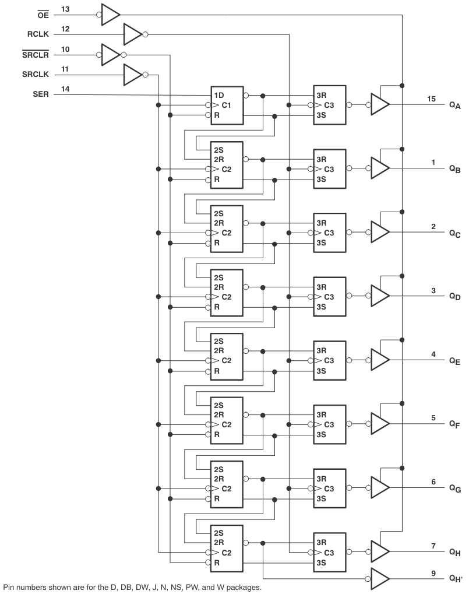
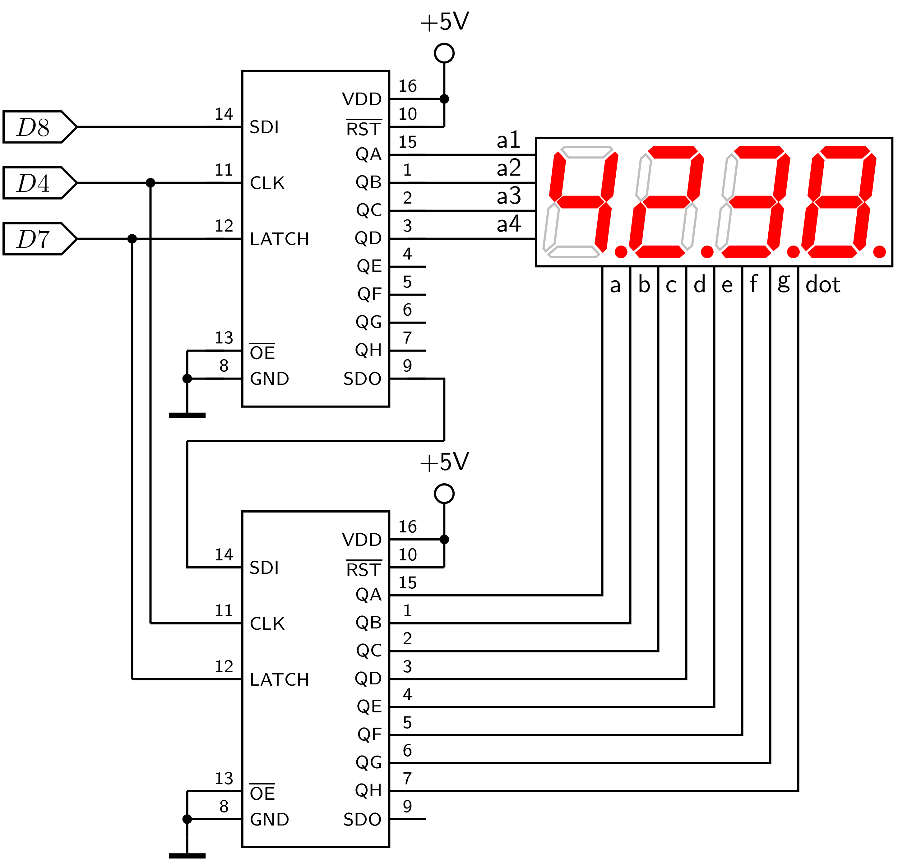
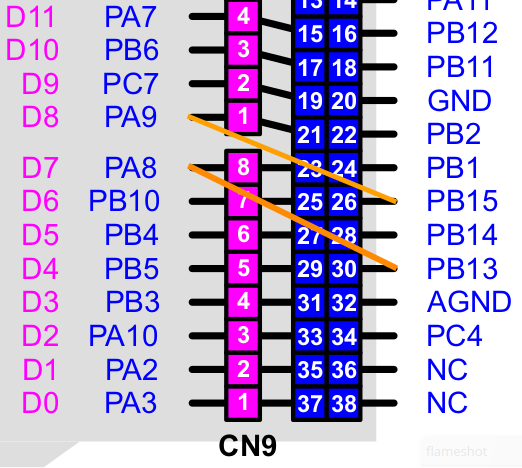

Display #
Popis #
Na module umiestnený 4-znakový LED display je riadený dvoma 8-bitovými posuvnými registrami 74HC595. Obvod obsahuje 8-bitový posuvný register typu serial-in / paralell-out a 8-bitový pamätový register tvorený D-klopnými obvodmi.
Vnútorná štruktúra obvodu 74HC595
Dáta zo vstupu SER (DIN) postupne podľa hodinových impulzov SRCLK (CLK) posúvajú do posuvného registra tvoreného klopnými obvodmi C1 a C2. Pomocou signálu RCLK (LATCH) sa obsah posuvného registra prepíše do pamäte tvorenej obvodmi C3. Po zaplnení registra postupujú dáta na výstup obvodu QH’ (DOUT), obvody je možné radiť do série (daisy chain). Signál OE (OUTPUT ENABLE) určuje stav výstupných pinov obvodu, pri OE=1 sú výstupné piny v stave s vysokou impedanciou.


Obr. 59 Vnútorná štruktúra obvodu 74HC595.#
Zapojenie #
Posuvné registre displeja majú spoločný hodinový signál CLK a signál LATCH. Výstupy prvého posuvného registra sú pripojené k anódam znakov, výstupy druhého ku katódam segmentov. Pririadení displeja preto musíme vyslať dve 8-bitové slová, v ktorých je informácia o tom, v ktorom znaku budú rozsvietené príslušné segmenty, toto musíme zopakovať pre každý znak. Ak chceme, aby display svietil trvalo, musíme jeho stav periodicky obnovovať.


Obr. 60 Zapojenie displeja.#
Display |
Nucleo-64 |
Arduino |
|---|---|---|
LATCH |
PB5 |
D4 |
CLOCK |
PA8 |
D7 |
DATA |
PA9 |
D8 |
Pri použití modulu ako nadstavby pre Arduino je displej riadený programovým generovaním signálov na prislušných pinoch. Pre elegantnejšie riadenie displeja môžeme využiť rozhranie SPI, toto ale nie je možné v Nucleo-64 premapovať tak, aby mohlo priamo obsluhovať piny displeja. Musíme si preto pre použitie rozhrania SPI2 pomôcť prepojkami na konektore modulu Nucleo-64, ktorými spojíme piny 30-23 a 26-21.


Obr. 61 Pripojenie rozhrania SPI2 k displeju.#
Programovanie #
Pre obsluhu displeja použijeme sériové rozhranie SPI2. Pre rozsvietenie znaku displeja musíme najskôr vyslať do sériového rozhrania informáciu o segmentoch displeja, ktoré chceme rozsvietiť a potom informáciu o príslušnom znaku. Vyber znaku je určený stavom L na príslušnej anóde displeja, segmenty sa rozsvietia v stave L na príslušnom vystupe registra.
Priradenie segmentov pre zobrazenie znakov
0 1 2 3 4 5 6 7 8 9
num_code = [0xC0,0xF9,0xA4,0xB0,0x99,0x92,0x82,0xF8,0x80,0x90]
Priradenie pozícii znakov
0 1 2 3
num_pos = [0x01,0x02,0x04,0x08]
Príklady #
Rozsvietenie jedneho znaku displeja
from pyb import SPI, Pin
# kodova tabulka segmentov pre zobrazenie cislic
# 0 1 2 3 4 5 6 7 8 9
num_code = [0xC0,0xF9,0xA4,0xB0,0x99,0x92,0x82,0xF8,0x80,0x90]
# kodova tabulka pozicie znakov
# 0 1 2 3
num_pos = [0xF1,0xF2,0xF4,0xF8]
pin = Pin('PB5', Pin.OUT)
spi = SPI(2, SPI.CONTROLLER, baudrate=100000, polarity=0, phase=0, crc=None)
pin.value(False)
spi.send(num_code[3]) # kod znaku
spi.send(num_pos[2]) # poloha na displeji
pin.value(True)
Zobrazenia dát na displeja v programovej slučke
Pomocou cyklu for … rozsvietime postupne všetky segmenty displeja, programová slučka je ale blokujúca pre iné aktivity.
from pyb import SPI, Pin
# kodova tabulka segmentov
num_code = [0xC0,0xF9,0xA4,0xB0,0x99,0x92,0x82,0xF8,0x80,0x90]
# kodova tabulka znakov
num_pos = [0xF1,0xF2,0xF4,0xF8]
# obsah displeja
num_disp = [4,3,7,9]
# chip select
pin = Pin('PB5', Pin.OUT)
spi = SPI(2, SPI.CONTROLLER, baudrate=100000, polarity=0, phase=0, crc=None)
for j in range(4000):
for i in range(4):
pin.value(False)
spi.send(num_code[num_disp[i]]) # kod znaku
spi.send(num_pos[i]) # poloha na displeji
pin.value(True)
Zobrazenia dát na displeja pomocou prerušenia časovača
Cyklus obnovenia stavu displeja je riadený prerušením od časovača. Pri vyvolaní prerušenia je volaná funkcia update_display(), ktorá zobrazí znaky z poľa num_disp[], hodnoty v tomto poli a ich zobrazenie na dispelji je možné počas behu programu meniť.
from pyb import SPI, Pin, Timer
import time
def update_display(timer):
for j in range(16):
for i in range(4):
c = num_disp[i]
pin.value(False)
spi.send(num_code[c])
spi.send(num_pos[i])
pin.value(True)
# zhasnutie poslednej cislice v pauze, aby vsetky svietli rovnako
pin.value(False)
spi.send(0xFF)
spi.send(0xF8)
pin.value(True)
def display_int(x):
# zobrazenie cisla 0...9999
if x in range(0, 10000):
global num_disp
a = int(x/1000)
b = int( (x-a*1000) / 100 )
c = int( (x-a*1000-b*100)/10)
d = int( (x-a*1000-b*100 - c*10))
num_disp=[a,b,c,d]
num_code = [0xC0,0xF9,0xA4,0xB0,0x99,0x92,0x82,0xF8,0x80,0x90]
num_pos = [0x01,0x02,0x04,0x08]
num_disp = [1,2,3,4]
# chip select
pin = Pin('PB5', Pin.OUT)
spi = SPI(2, SPI.CONTROLLER, baudrate=100000, polarity=0, phase=0, crc=None)
tim = Timer(4)
tim.init(freq = 50)
pin.value(True)
# dynamicka obnova stavu displeja v preruseni casovaca
tim.callback(update_display)